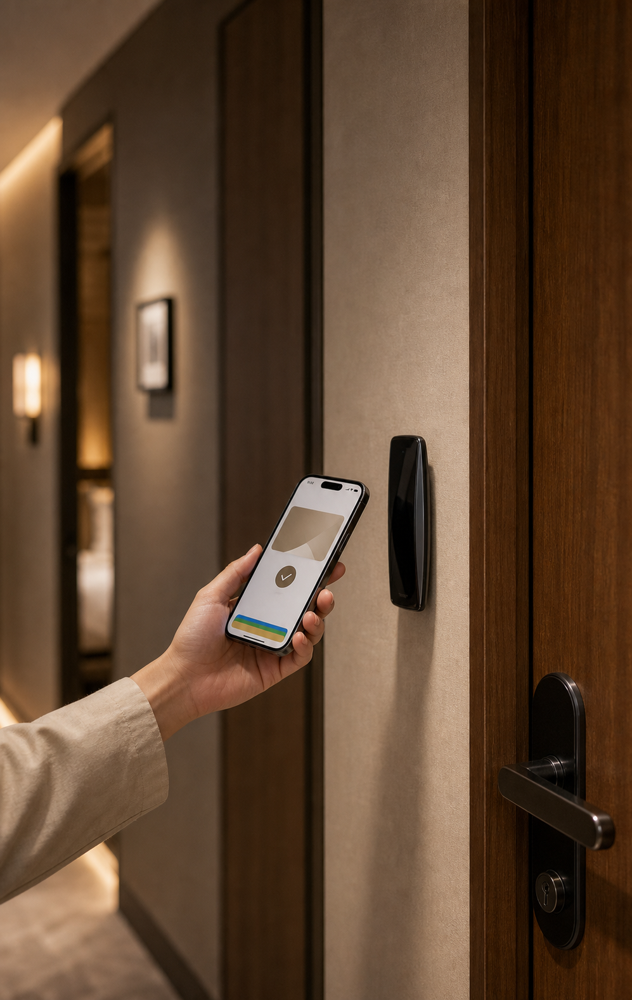
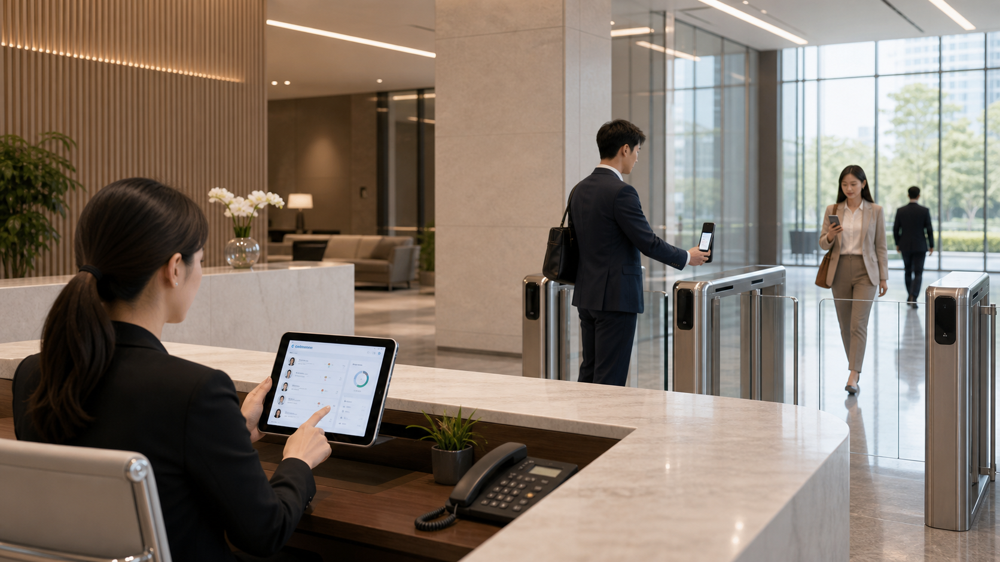

Smart check-in ถูกพูดถึงมากในช่วงไม่กี่ปีที่ผ่านมา แต่โจทย์จริงไม่ใช่การเอา front desk ออกไป และไม่ใช่การบังคับให้แขกทุกคนกดเครื่องเอง. คำอธิบายที่แม่นกว่าคือ smart check-in ช่วยจัดระเบียบช่วงเวลาที่มักวุ่นวายที่สุดของโรงแรม: ยืนยัน booking, กรอกข้อมูล, ชำระเงิน, รับ keycard, ถามทาง, ฝากกระเป๋า, แจ้ง housekeeping และบันทึก preference.
Smart check-in ที่ดีไม่ควรทำให้โรงแรมเย็นชา. ตรงกันข้าม มันควรซ่อนงานซ้ำๆ การรอคิว การกรอกข้อมูล และการสลับระบบไว้ข้างหลัง เพื่อให้แขกรู้สึกเบาขึ้น และให้พนักงานมีเวลาทำ hospitality จริงๆ มากขึ้น.
Check-in เริ่มก่อนมาถึงโรงแรม

อดีต check-in มักเริ่มเมื่อแขกยืนอยู่หน้าเคาน์เตอร์. ตอนนี้เทคโนโลยีโรงแรมจำนวนมากเลื่อนขั้นตอนนี้ไปก่อนวันเดินทาง: ยืนยันข้อมูลออนไลน์ ชำระเงินหรือ pre-authorize กรอกข้อมูลเข้าพัก แจ้งเวลามาถึง และบอกความต้องการพิเศษ.
สำหรับแขก นี่หมายถึงการต่อคิวน้อยลง. สำหรับโรงแรม มันช่วยกระจายแรงกดดันช่วง peak. สถานการณ์ที่ดีที่สุดไม่ใช่ให้ทุกคนเดิน workflow เดียวกัน แต่ให้แต่ละคนเลือกเส้นทางที่เหมาะ: คนรีบเข้าห้องได้เร็ว คนที่ต้องการบริการยังได้รับการดูแล.
Keycard กำลังกลายเป็นกุญแจในโทรศัพท์

Mobile key, mobile room card, Apple Wallet หรือ Google Wallet ทำให้แขกไม่จำเป็นต้องถือบัตรพลาสติกเพื่อเข้าห้อง ใช้ลิฟต์ หรือเข้าส่วนกลาง. ประสบการณ์นี้คล้าย boarding pass ดิจิทัล: บัตรหายยากขึ้น ต่อคิวน้อยลง และ workflow ดูทันสมัยขึ้น.
แต่ access control ไม่ใช่แค่ “เปิดประตูได้”. โรงแรมต้องคิดต่อว่า key เริ่มใช้เมื่อไร หมดอายุเมื่อไร แชร์ได้ไหม จำกัดจำนวนอุปกรณ์ได้หรือไม่ ถ้าเน็ตล่มทำอย่างไร กลอนเดิมอัปเกรดได้ไหม และ PMS sync ได้หรือเปล่า.
Front desk ไม่หายไป แต่เปลี่ยนบทบาท

ธุรกิจโรงแรมบอกเสมอว่าบริการสำคัญที่สุด แต่พนักงาน front desk มักถูกผูกไว้กับงานเอกสารและระบบ: บัตรประชาชน การชำระเงิน มัดจำ ประเภทห้อง อาหารเช้า ที่จอดรถ ใบกำกับภาษี keycard และ field ในระบบ.
Front desk ในอนาคตควรเป็น service node ที่ยืดหยุ่น. บางคนเช็กอินผ่านมือถือ บางคนรับบัตรจาก kiosk บางคนได้รับความช่วยเหลือจากพนักงานที่ถือ tablet และบางคนยังต้องการ full reception. ประเด็นไม่ใช่วิธีไหนเทคที่สุด แต่คือโรงแรมพาแขกแต่ละกลุ่มไปยังเส้นทางที่เหมาะได้หรือไม่.
ระบบต้อง plug-and-play และทำงานเองได้ในพื้นที่

Demo ของ smart check-in มักดูสวย: กดมือถือเช็กอิน สแกนรับบัตร ประตูเปิดอัตโนมัติ. แต่เมื่อใช้งานจริง ผู้ประกอบการโรงแรมสนใจมากกว่าว่าติดตั้งเร็วไหม รบกวนหน้างานน้อยไหม ทำงานเสถียรไหม และไม่ต้องรื้อ front desk, locks และ PMS ทั้งหมดหรือไม่.
Cellbedell วางตัวเองเหมือน smart node แบบ plug-and-play. เมื่อ PMS ส่ง booking, room number, arrival time และ guest status ผ่าน API ระบบก็สร้าง permission, virtual key หรือ access task ได้อัตโนมัติ ทำให้ front desk, locks และโทรศัพท์ของแขกไม่แยกกันเป็นเกาะ.
สิ่งสำคัญคือ workflow นี้ไม่พึ่ง cloud real-time ทั้งหมด. Edge computing และ local device ช่วยให้การเปิดประตู การตรวจสิทธิ์ และการทำงานสำคัญเกิดขึ้นที่หน้างานได้ แม้เน็ตสะดุดช่วงสั้นๆ.
AI agent จะเปลี่ยนบทสนทนาให้เป็น task

คุณค่าของ AI agent ใน hospitality ไม่ใช่แค่ตอบแชตให้ดูเป็นธรรมชาติขึ้น แต่คือการแปลงประโยคของแขกเป็นงาน. เช่น “พรุ่งนี้บ่ายฉันจะมาถึงก่อนเวลา ฝากกระเป๋าได้ไหม และมีร้านอาหารเหมาะกับเด็กใกล้ๆ ไหม?”
ระบบที่ดีควรเช็ก policy, สร้าง baggage note, mark ว่าเป็น family guest, แนะนำร้านอาหาร และส่งต่อความต้องการพิเศษให้ front desk หรือ concierge เมื่อจำเป็น. AI ไม่ต้องแกล้งเป็น butler ที่สมบูรณ์แบบ แต่ต้องทำให้บทสนทนาเหลือ structured record ที่ทีมหน้างานและ housekeeping ใช้ต่อได้.
เป้าหมายสุดท้ายคือทำให้การมาถึงเบาลง

Smart check-in ไม่ใช่การไล่ตาม automation ทั้งหมด แต่คือการทำให้การมาถึงลื่นขึ้น. แขกไม่ต้องกรอกข้อมูลซ้ำ front desk ไม่ต้องสลับหลายระบบ housekeeping รู้ว่าใครมาก่อนเวลา access control รู้ว่าเมื่อไรควรเปิด และแบรนด์จำ preference ที่สำคัญได้.
เทคโนโลยีโรงแรมที่ดีควรทำให้คนแทบไม่รู้สึกถึงเทคโนโลยี. มันไม่ได้แย่งบริการไป แต่เอา friction ที่ทำให้บริการเสียอุณหภูมิออกไป.